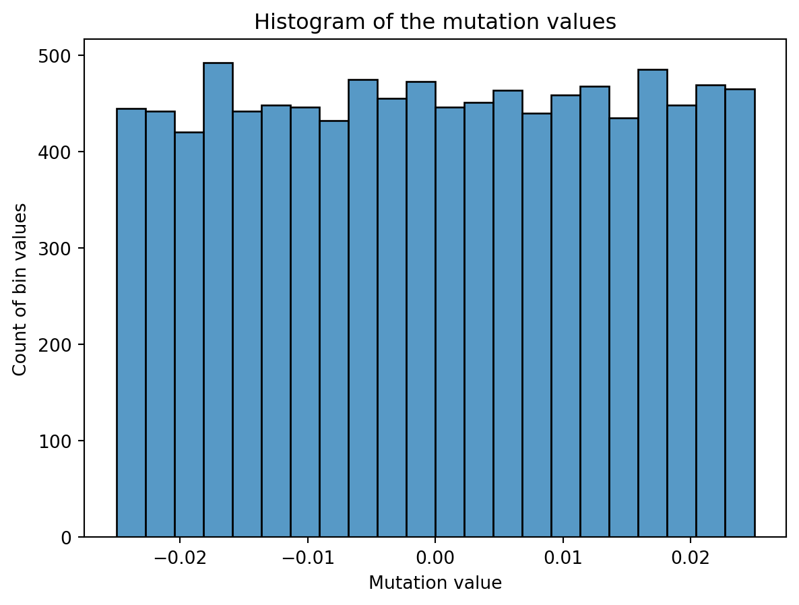

ind1 = [0, 0, 0, 0]
ind2 = [1, 1, 1, 1]
def crossover(a, b):
return a[:2] + b[2:]
print(f'Result of crossover: {crossover(ind1, ind2)}')Result of crossover: [0, 0, 1, 1]All code for this project can be found my github page
Genetic algorithms are a beautiful subset in the machine learning domain, that use evolutionairy techniques to arrive to solutions that other algorithms have trouble at. These techniques include the combining of solutions, often called crossover, and the slightly altering of solutions, called mutations.
In this post, I’ll show two versions genetic algorithms that can be used for image reconstruction given a target image. In the real world, it will have few applications but it’s a great theoretical exercise and practice for understanding of the algorithms and image manipulation. However, they are unmistakingly usefull and have been applied in many domains, one being Neural Architecture Search, a method to find the best architecture for a neural network given a specific problem.
While other optimization methods, such a gradient descent, are incredibly powerful for problems that provide a smooth non-stochastic optimization curve, they frequently lack the variance needed for problems with solutions not easily findable following a single trajectory in parameter space. This is where genetic algorithms can provide unexpected solutions.
As in nature, genetic algorithms are based on natural selection and survival of the fittest. That means that each iteration, we select the best candidates for the problem at hand and continue with those. Each individual represents a solutions, and by slightly altering and combining solutions we hope to come to a better solution each iteration. As you can understand, this is a very generic approach that can be applied to all types of problems.
Generally, the algorithms for genetic algorithms follows roughly the same outline and is as follows:
pop = create initial popluation with n individuals
for i in n_iterations:
1. randomly combine/reproduce individuals
2. randomly mutate individuals
3. retain fittest individualsLet’s start with the most simple version of changes made to candidates: mutations. In any organism with DNA (or some form of it), we see mutations; slight changes in the genetic code. In organism, it’s typically the results of an incorrect copy of DNA code, but in this case we are intentionally applying mutation to create slight variations.
For human cells, a mutated cell can start to misbehave, which is generally cleaned up by our immune system. However, sometimes they’re missed or not easy to clean up and can lead to serious consequences such as cancer. We also know mutations from sci-fi and monster stories, which result in zombies and the like, but that’s unfortunately not what we are talking about today.
Procreation is very important for this algorithm, because it allows the combining of two (or more) individuals into a new individual. Hopefully, this leads to to an individual that has all good qualities of their parents and none of the bad. In the rest of this post, the terms procreation, crossover and combine are used interchangeably for this concept.
An example with two individuals and their crossover. In this example, and individual is defined by its genes: 4 binary digits. The crossover in this case is just taking the first two digits of the first individual and the latter two of the second individual.
To assess which individuals are the most fit, you need some metric. Depending on the problem, naturally you can use many different versions. In our case, image reconstruction, we are going to use the mean-squared error of the pixel values \(l = \frac{1}{n} \sum_{i=1}^{n}(c_i - T)^2\) where \(n\) is the size of the population, \(c_i\) is candidate \(i\) and \(T\) the target image. This works nicely with our data and as always, penalizes the largest errors the most.
In this method, we try to recreate the target image by manipulating individual pixels and comibing whole pixel arrays. The genes of an individual is a pixel array the size of the target image. For some RGB image, this will be a three dimensional, for example (200, 200, 3).
Let’s first deine a pixel individual and set its genes to the shape that we want. We also give an option to pass genes, which is handy for the crossover step later. Lastly, we define that probability to mutate mutate_p and the delta of a mutation mutate_d. The main methods of the individual are already defined here as well.
class PixelIndividual:
"""Individual with pixel grid for genes."""
def __init__(
self,
shape: Tuple,
genes: np.ndarray | None = None,
mutate_d: float = 0.05,
mutate_p: float = 0.2
):
self.shape = shape
self.mutate_d = mutate_d
self.mutate_p = mutate_p
self.genes = np.random.rand(*shape).astype(np.float32) if not genes else genesThe second method is our choice of what happens during crossover. How to implement a crossover function is really up to the person working on the problem. Initially I just took the pixelwise mean of both parents, but that seemed to always kind of move towards hovering around 0.5, which is maybe logical, but definitely undesirable. In this version, I chose to randomly take each pixel from either parent. This seems to work fairly well but you can use many other versions so make sure to play around with this a bit yourself. The filter_arr creates an array of random zeros and ones. We use it as a filter to decide which value to pick.
Then, onto the mutation part. We create some noise of a certain magnitude, shift it so the mean is zero and half of it is negative and add it to the existing pixel values of said candidate. In the plot below you can see the distribution of a mutation for an individual with 100x100 grid as genes. I have chosen a uniform distribution for this, but again, you can choose others such as normal. However, the domain of the uniform distribution is simple and intuitive. For example, scaling an uniform distribution with 0.2 will have a magnitude of 0.2 as well, ranging from 0 to 0.2 distributed evenly. So you can see why working with this distribution is nice.

As a last step, we apply the mutation and clip the values to the range [0, 1]. This is because otherwise we can mutate outside of the colour boundaries of an image, which will be clipped when shown as an image anyway. The domain for pixel values with a float is [0, 1] or [0, 255] for integer values, and plotting libraries like matplotlib will clip values for you if you don’t. To prevent hidden problems, we already make sure the domains and datatypes are correct.
Because I encountered a lot of datatype issues, such as float64 and integer reprentations, I cast most computation to float32 and also do a dtype check in the compute_fitness method. This is because this is the last step of each iteration, and generally should represent if things went correctly.
The fitness method is in this case the mean-squared error.
Some of the results are pretty cool. With smaller images, it works quite fast but for larger it can take several hours to several days to get any good results. The mario image took around 12 hours to create, and while you can clearly see the outlines, it’s far from perfect.
This run is for just 200 iterations and takes around a minute. The right most graph shows the fitness distribution of the current population. The fitness function here was sum of squared errors, rather than mean.

This run is for 10k iterations and takes around a 1-2 hours. The right most graph shows the fitness distribution of the current population. You can see the graph struggle to show a clear distribution. This seems to mean that the whole distribution is very close, although the values on the x-axis are pretty big, so I’m not entirely sure why it cannot show a good distribution.
You can see an immediate steep decline in loss, which is attributed to the initial high variety in individuals. The further the iterations go, the more we have selected the optimal individuals and the more of the population can be considered brothers and sisters of the original best individual. When the problem is complex and high-dimensional, this happens more and more, since it’s quite unlikely that other candidates can present a better solution from mutation within the timeframe of the best candidate taking over the population.


The second method of approximating images is using a population of polygons. Polygons are shapes with 3 or more points connected in no specific order. This could be a triangle, square but also also an hourglass shape has 4 points where the middle lines cross. While we could randomly add or remove points, in this case I chose to leave it at 3 points.
The individuals here are slightly more complex than the pixel versions. That is because the polygons have their own class. Each individual’s genes are composed of a starting amount of 10-20 polygons.
Crossovers are done simply by randomly taking a polygon of either parents. If one of the parents has more polygons, we randomly add polygons in those indices as well.
Mutation in this case has to be done at the “genes” level rather than the individual level. So the mutate method of the individuals here is surpisingly simple.
def mutate(self):
"""mutate method for an individual"""
for polygon in self.polygons:
polygon.mutate()
# deletion chance
if np.random.random() < self.add_or_del_p and len(self.polygons) > 1:
idx = np.random.randint(0, len(self.polygons) - 1)
self.polygons.pop(idx)
# addition chance
if np.random.random() < self.add_or_del_p:
self.polygons.append(
Polygon(
canvas_size=self.canvas_size,
mutate_delta=self.mutate_delta,
mutate_p=self.mutate_p,
)
)There are three steps:
def mutate(self):
"""mutate method for a gene"""
changed = False
for coord in self.coords:
if self.mutate_p > np.random.random():
changed = True
coord[0] += np.random.randint(0, int(self.x_size * self.mutate_d)) - int(
self.x_size * self.mutate_d * 0.5
)
coord[0] = np.clip(coord[0], 0, self.x_size)
coord[1] += np.random.randint(0, int(self.y_size * self.mutate_d)) - int(self.y_size * self.mutate_d * 0.5)
coord[1] = np.clip(coord[1], 0, self.y_size)
if self.mutate_p > np.random.random():
self.color += (np.random.random(self.color_c) * self.mutate_d) - (self.mutate_d * 0.5)
self.color = np.clip(self.color, 0, 1)
if changed:
assert (0 <= self.color).all() and (self.color <= 1.0).all()
for x, y in self.coords:
assert 0 <= x <= self.x_size
assert 0 <= y <= self.y_size
self.calc_size()This mutation is conceptually straight forward:
mutate_d as the fractional delta (i.e. 0.1 is 10% variation in position) based on the whole canvas width and height.mutate_d indicating a fraction delta. In this case the max is 1, so taking the random output is enough here. Because our colour is RGB, we input the self.color_c into random to get the desired number of channels (3).To see what this looks like if we just have some polygons and keep mutating them.

Because we do not want a model that just keeps adding polygons, we will penalize based on the number of polygons. The problem here is that you do not want to penalize it too much. If the difference of the penalty of one extra polygon is greater than the average difference in fitness between different individuals, then just removing a polygon will almost always be the best option. This happened at numerous attempts, and you just end up with an empty white grid very fast.
The penalty was calculated as follows: \(p = 1 + \lvert pop\rvert * r_{pen}\) where \(p\) is the eventual penalty, \(\lvert pop\rvert\) is the total population size and \(r_{pen}\) is the penalty rate. The penalty is applied as multiplier to the loss, which is the same as before: MSE. Hence the computation becomes \(L_{pen} = L * p\) where \(L\) and \(L_{pen}\) indicate the loss initially and penalized, respectively.
The last interesting section is how to achieve the population crossover here.
def combine(self):
pairs = list(permutations(self.pop, r=2))
sample_pairs = random.choices(pairs, k=self.popsize) # Sample popsize pairs out of all combinations. N out of N*(N-1)
# sample all permutations in the sample_top_n percent of the population.
sample_pairs += list(
permutations(self.pop[: int(len(self.pop) * self.sample_top_n)], r=2)
)
# Create copies of the copy_top_perc fraction of the population
children = [
self.get_best().copy() for _ in range(max(int(self.copy_top_perc * len(self.pop)), 2))
]
# Add crossover of the picked pairs and add to the children.
children += [x.crossover(y) for (x, y) in sample_pairs]
self.pop += childrenAs stated before, we want to have a good balance between selecting fit individuals but also retaining the variance of the whole population. I try to find a balance in this by both selecting from the total population while also sampling the top x percent more than the rest and even copying the top y percent.
Since we are playing with polygons, I decided a target that was made of polygons might be suitable. This fox has some clear advantages for polygons, with big blue areas and a pointy bright fox head in the middle.

We observe a sharp incline in the number of polygons, even though it does not really seem to result in a clear improvement in fit. It seems the penalty was not tuned appropriate for this case. In this middle, we do see the fox head shape become apparant, but the algorithm fails to fill in the finer details of the head.

It’s clear that this image has too much detail for this algorithms. Many of the planes are too small to easily get picked up by the mean-square-error reduction. The best fit is often achieved by having big polygons match up with the background. Additionally, the meandering of the number of polygons is a clear indication that the penalty was nicely balanced, since there was no clear preference.
To verify some results, I ran a hyper parameter search. I fixed the mutation probability and delta for this experiment, but in hindsight I should run it to include those.
From the figure, if you select only the lowest losses, it becomes clear that most of the hyper parameters do not significantly impact the outcome. Going down, we first see that the addition/deletion probability starts to fade, with only the fewer values returning low losses. After that, the sample_top_n=0 is dropped, meaning that some sampling of the top candidates does improve results.
It is interesting to see that the number of polygons doesn’t seem to have a big impact, and it’s strange to see copy_top_perc not have much impact while the sample_top_n does. They should represent some level of similarity in their results.
For the pixel approach, a more balanced approach between crossover and mutation seems appropriate. It’s clear the algorithm quickly descents to a point where only mutations seems to be carrying improvements. Tuning the ratios to have a healthier balance with crossover would hopefully result in a slower but longer and more persistent decline of the loss.
For the polygon approach, I think one possible improvement is to have polygons that work on different scales. This means that we would have some polygons that work on large areas and other on small areas and we restrict the number in both or fix them to some proportion. That might allow the algorithm to fill in some finer details while also filling the big areas.
Additionally, the same improvement for the polygons might have to be made as for the pixels. The polygons also quickly seemed to descent into a situation where all individuals are very similar, hence more and stickier crossing over would be good.
Lastly, functionality that allows the addition and deletion of polygon points might bring an interesting variation. This could support pentagons, hexagons and more.
In this post I showed two approaches that can replicate an image given some target using genetic algorithms. Both approaches have some advantages and some drawbacks, but both have their use. While this example is mainly for academic purposes, the core genetic algorithm has many applications and this practice both improves understanding and awareness of it.
Personally, I’ve really enjoyed working on this project with both the academic understanding as well as the engineering of it being sometimes challenging. I hope you, the reader, has learned something from this post and can use it in your own work.